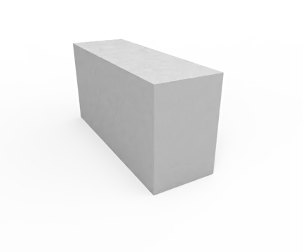

Как выбрать газоблок: D500 vs D600 — полное сравнение

При выборе газобетонного блока для строительства дома или коммерческого здания чаще всего сравнивают две марки — D500 и D600. Обе относятся к автоклавному газобетону, но различаются по плотности, прочности и области применения. Разбираем, когда какой блок выбрать и почему D600 — оптимальный выбор для частного строительства.
Что означают марки D500 и D600
Буква D в маркировке газобетона обозначает плотность материала в сухом состоянии, измеряемую в кг/м³. Таким образом:
- D500 — плотность 500 кг/м³. Более лёгкий блок с чуть лучшими теплоизоляционными свойствами.
- D600 — плотность 600 кг/м³. Более тяжёлый, но значительно более прочный блок.
Оба блока производятся по ГОСТ 31360-2007 методом автоклавного твердения, что обеспечивает стабильную структуру, точную геометрию (±3 мм) и предсказуемые характеристики.
Сравнительная таблица характеристик
| Характеристика | D500 | D600 |
|---|---|---|
| Плотность | 500 кг/м³ | 600 кг/м³ |
| Класс прочности | B2.5 (3.5 МПа) | B3.5 (5 МПа) |
| Морозостойкость | F50 | F75 |
| Теплопроводность | 0.12–0.14 Вт/м·°C | 0.14–0.17 Вт/м·°C |
| Усадка при высыхании | ≤ 0.5 мм/м | ≤ 0.5 мм/м |
| Звукоизоляция | Хорошая | Отличная |
| Несущая способность | До 3 этажей | До 5 этажей (с каркасом) |
| Удержание крепежа | Среднее | Высокое |
| Горючесть | НГ | НГ |
D600 — выбор для частного строительства

Для строительства частного дома, коттеджа или дачи газоблок D600 — безусловный лидер. Вот почему:
1. Прочность в 1.5 раза выше
Класс прочности D600 — B3.5 (5 МПа) против B2.5 (3.5 МПа) у D500. Это значит, что стена из D600 выдерживает на 40% большую нагрузку. Для несущих стен частного дома высотой 2–3 этажа это даёт запас прочности, который важен при:
- Установке тяжёлых перекрытий (железобетонные плиты)
- Навесных фасадных системах
- Креплении кровельных конструкций
- Монтаже навесного оборудования (бойлеры, кондиционеры, телевизоры)
2. Морозостойкость F75
В климатических условиях Казахстана, где зимние температуры достигают -35°C и ниже, морозостойкость F75 у D600 — это 75 циклов замораживания-оттаивания без потери характеристик. У D500 этот показатель ниже — F50. Для несущих наружных стен разница принципиальна.
3. Лучшее удержание крепежа
Более плотная структура D600 означает более надёжное крепление анкеров, дюбелей и саморезов. Навесные фасады, кухонные шкафы, перила — всё держится крепче. С D500 чаще нужны специализированные химические анкера.
4. Звукоизоляция
Более высокая плотность D600 обеспечивает лучшую звукоизоляцию — стена 300 мм из D600 гасит до 55 дБ, что соответствует нормам для межквартирных перегородок.
5. А как же теплопроводность?
Да, D500 чуть теплее — 0.12 против 0.14 Вт/м·°C. Но разница менее 15% и легко компенсируется:
- Увеличением толщины стены на 50 мм (300 мм → 350 мм)
- Утеплением фасада (минвата 50 мм полностью нивелирует разницу)
- Качественной кладкой на тонкий клеевой шов 1–3 мм
При этом вы получаете значительно более прочную и долговечную стену. Прочность нельзя «доутеплить», а теплопроводность — можно.
D500 — когда он лучше?
Газоблок D500 — отличный материал, но его область применения другая:
- Заполнение стен в многоэтажных каркасных зданиях — когда несущую нагрузку берёт на себя железобетонный каркас, а газобетон выполняет только теплоизолирующую и ограждающую функцию. Здесь более лёгкий D500 снижает нагрузку на каркас и экономит на фундаменте.
- Внутренние ненесущие перегородки — где прочность не критична, а вес конструкции нужно минимизировать.
- Дополнительное утепление — слой D500 поверх кирпичной или бетонной стены.
Если вы строите многоэтажный жилой комплекс с ЖБ-каркасом, D500 — экономически обоснованный выбор для заполнения. Но для частного дома, где стены несущие — выбирайте D600.
Рекомендации по применению
| Тип строительства | Рекомендация |
|---|---|
| Частный дом 1–3 этажа | D600 — несущие стены |
| Коттедж с мансардой | D600 — прочность и крепёж |
| Гараж, баня, хозпостройка | D600 — надёжность |
| Многоэтажка с ЖБ-каркасом | D500 — заполнение стен |
| Внутренние перегородки | D500 или D600 100 мм |
| Утепление кирпичных стен | D500 |
Экономия клея на D600 первого сорта
Газоблок D600 первого сорта с геометрией ±3 мм позволяет вести кладку на тонкий клеевой шов 1–3 мм. Это экономит до 30% клея по сравнению с блоками второго сорта. А ровные грани означают минимальную штукатурку — экономия на отделке.
Итог: D600 — баланс прочности и тепла
Если вы строите частный дом в Казахстане — газоблок D600 автоклавный, 1 сорт — это оптимальный выбор. Он прочнее, морозоустойчивее, лучше держит крепёж, а небольшая разница в теплопроводности легко компенсируется. Для каркасного многоэтажного строительства используйте D500 как заполнение.
Нужен газоблок D600 в Астане?
Прямые поставки с завода, доставка манипулятором, цена от 35 000 ₸/м³
Получить прайс →